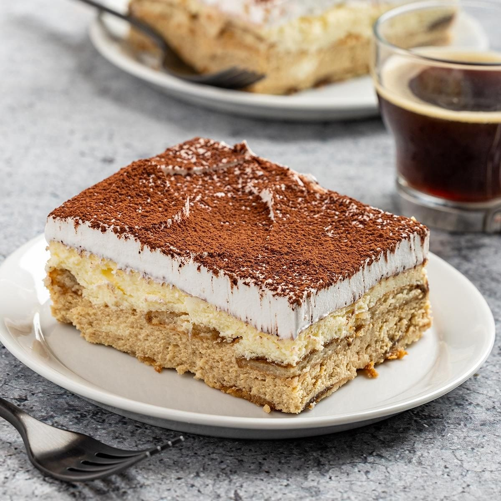
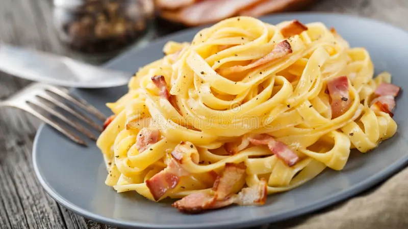

Italy

Italian food is famous all around the world for its delicious flavors and simple ingredients. Italy is known for popular dishes such as pizza, pasta, lasagna, risotto, and ravioli. Italians also enjoy tasty desserts like gelato and tiramisu. Each region of Italy has its own special dishes, making Italian cuisine diverse and exciting to discover. 🇮🇹🍕

Pizza is one of the most famous and loved foods in Italy, and it has become popular all around the world. Traditional Italian pizza is made with a simple dough, fresh tomato sauce, mozzarella cheese, and different toppings. One of the most famous types is Pizza Margherita, which is made with tomatoes, mozzarella, and basil, representing the colors of the Italian flag. Italian pizza is known for its fresh ingredients, delicious flavors, and thin, crispy crust. In Italy, pizza is often enjoyed with family and friends in restaurants or traditional pizzerias.
Click to get the recipe
Tiramisu is one of the most popular Italian desserts and is loved by people of all ages. It is made with layers of soft ladyfinger biscuits soaked in coffee and a creamy mixture of mascarpone cheese. The dessert is usually finished with a layer of cocoa powder on top, giving it a rich and delicious taste. Tiramisu has a soft, creamy texture and a combination of coffee and sweet flavors. Its name comes from the Italian expression meaning “pick me up,” which refers to the coffee and its energizing effect. It is commonly served after a meal and is a famous part of Italian cuisine.
Click to get the recipe
Pasta is one of the most important foods in Italian cuisine and is enjoyed in many different ways throughout the country. There are hundreds of types of pasta, including spaghetti, penne, lasagna, ravioli, and many others. Pasta can be served with tomato sauce, cheese, vegetables, meat, seafood, or pesto. Different regions of Italy have their own traditional pasta recipes and special ways of preparing them. Because it is simple, delicious, and easy to combine with many ingredients, pasta has become one of the most famous symbols of Italian food around the world.
Click to get the recipe
Gelato is a famous Italian frozen dessert that looks similar to ice cream but has a softer and denser texture. It is made in many delicious flavors, including chocolate, vanilla, pistachio, strawberry, hazelnut, and coffee. Gelato usually contains less air than traditional ice cream, which gives it a rich and creamy texture. In Italy, gelato is commonly enjoyed while walking through beautiful streets and city squares, especially during warm days. It is not only a delicious dessert but also an important part of the Italian food experience.
Click to get the recipe